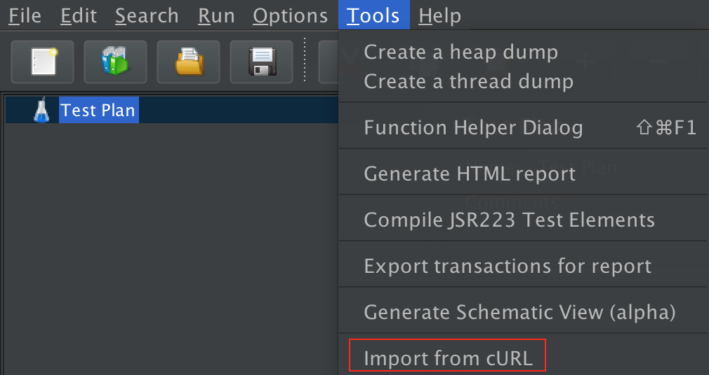
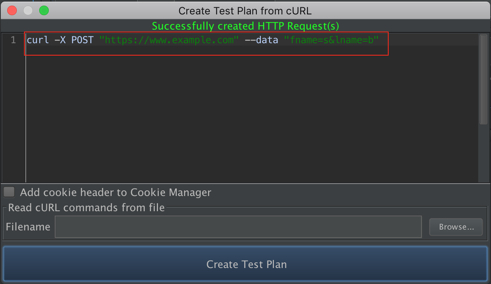

This method is to create http requests from curl command. If you want to know more about curl, please click the
Curl document.
|
24.1 How to enter (a) command(s)
|
Create a Test Plan From a cURL Command
- To create an import from a cURL, open the Tools menu and click Import from cURL.

Figure 1 - The menu where curl is located |
- There are two ways to enter the curl command line. Firstly, we can enter it manually. Secondly, we can import a file containing the curl command line.
This tool supports input of multiple curl command lines at the same time.

Figure 2.1 - Enter curl command in text panel |

Figure 2.2 - Enter curl command from file |
- Then, click Create Test Plan button and a new HTTP Sample will be added to the Test Plan.

Figure 3 - result of Test Plan |
|
|
|
24.2 Curl options supported
|
- -H, --header <header>
- Extra header to use when getting a web page.
- -X, --request <command>
- Specifies a custom request method to use when communicating with the HTTP server.
- --compressed
- Request a compressed response using one of the algorithms curl supports, and return the uncompressed document.
- -A, --user-agent <agent string>
- Specify the User-Agent string to send to the HTTP server.
- -b, --cookie <name=data>
- Pass the data to the HTTP server as a cookie.
- -d and friends
Sending data via POST request
Sends the specified data in a POST request to the HTTP server. If this option is used more than
once on the same command line, the data pieces specified will be merged together with a
separating '&' character. Thus, using '-d name=daniel -d skill=lousy' would generate a POST
chunk that looks like 'name=daniel&skill=lousy'.
- -d, --data <data>, --data-ascii <data>
- use @ to upload a file
- --data-raw <data>gt;
- --data-raw <data>
- This posts data exactly as specified with no extra processing whatsoever.
If you start the data with the character @, the rest should be a filename.
- --data-raw <data>ta>
- This posts data, similar to the other --data options with the exception that this performs
URL-encoding.
- --data-raw <data>
- This posts data similarly to --data but without the special interpretation
of the @ character.
- -F and friends
-
This lets curl emulate a filled-in form in which a user has pressed the submit button.
- -F, --form <name=content>
- use @ to upload a file
- --form-string <name=content>
- -u, --user <user:password >
- Specify user and password to use for server authentication.
- --basic, --digest
- Tells curl to use HTTP authentication.
- --cacert and friends
-
Tells curl to use the specified client certificate file when getting a file with HTTPS
- --cacert <CA certificate>
- --capath <CA certificate directory>
- --ciphers <list of ciphers>
- --cert-status
- --cert-type <type>
- -G, --get
- put the post data in the URL and use get to replace post.
- --no-keepalive
- Disables the use of keepalive messages on the TCP connection.
- -e, --referer <URL>
- Sends the Referer Page information to the HTTP server.
- -L, --location
- If the server reports that the requested page has moved to a different location
this option will make curl redo the request on the new place.
- -i, --include
- Include the HTTP-header in the output.
- --connect-timeout <seconds>
- Maximum time in seconds that the connection to the server may take.
- --keepalive-time <seconds>
- This option sets the time a connection needs to remain idle before sending keepalive probes
and the time between individual keepalive probes.
- -m, --max-time <seconds>
- Maximum time in seconds that you allow the whole operation to take.
- -x, --proxy <[protocol://][user:password@]proxyhost[:port]>
- Use the specified HTTP proxy. If the port number is not specified,
it is assumed at port 1080.
- -U, --proxy-user <user:password>
- Specify user and password to use for proxy authentication.
- -k, --insecure
- This option explicitly allows curl to perform insecure SSL connections and transfers.
- --raw
- When used, it disables all internal HTTP decoding of content or transfer encodings and instead makes them passed on unaltered,raw.
- -I, --head
- Fetch the HTTP-header only. HTTP-servers feature the method HEAD which this uses to get nothing but the header of a document.
- --interface <name>
- Perform an operation using a specified interface. You can enter interface name, IP address or host name.
- --proxy-ntlm/--proxy-negotiate
- Tells curl to use HTTP BASIC/NTLM/Digest authentication when communicating with the given proxy.
- --dns-servers <addresses>
- Resolve host name over DOH.
- --resolve <host:port:address>
- Provide a custom address for a specific host and port pair.
- --limit-rate <speed>
- Specify the maximum transfer rate you want curl to use.
- --max-redirs <num>
- Set maximum number of redirections which may be followed.
- --noproxy <no-proxy-list>
- Comma-separated list of hosts which do not use a proxy, if one is specified.
|
|
|
24.3 Warning
|
When the command you entered is ignored or contains warning content, we will display warning in the comment section of HTTP Request.

Figure 1 -Warning |
|
|
|